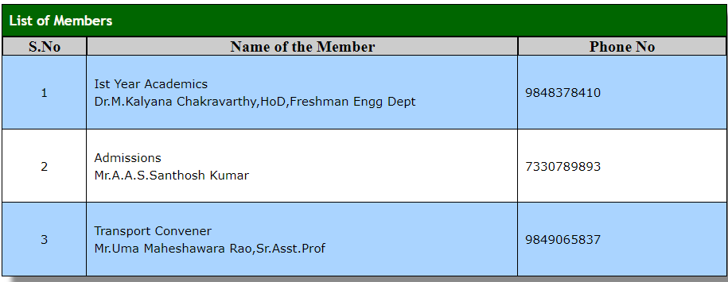

"ANITS" is located in a plot of 12 acres area in Sangivalasa Village of Bheemunipatnam Mandalam and is approximately 300 meters from the Chennai Kolkatta Highway.The institute is 27 Kms. from Visakhapatnam and is within 30 minutes drive.City Service Buses ply from Vizag every 15 minutes. The campus is at a distance of 3Kms. and 1Km., respectively from Bheemunipatnam and Tagarapuvalasa. RTC Bus No.222 runs from RTC Complex to Tagarapuvalasa.
